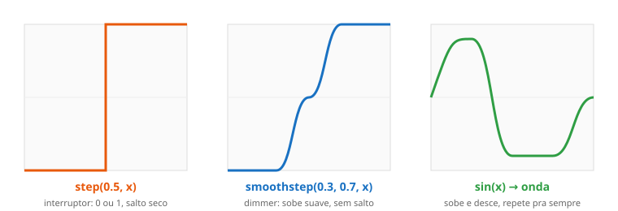

← Mapa do curso · Marco 1 · Módulo 3 de 6
Até agora a cor de cada pixel veio direto da posição. Mas o pulo de qualidade vem
quando a gente passa essa posição por uma função antes de virar cor. Função é uma
máquina: entra um número, sai outro. Trocar a máquina muda a imagem inteira. Neste módulo você
conhece quatro máquinas que aparecem em todo shader: step, smoothstep,
sin e fract.
mix(a, b, t) no módulo passado. Entrou um
t (de 0 a 1), saiu uma cor misturada. Toda função é assim — uma
entrada, uma saída. A pergunta deste módulo é: e se a saída não subir reto?
step e smoothstepImagine a luz de um quarto. O interruptor tem dois estados: apagado (0) ou aceso
(1), nada no meio — isso é step. Já o dimmer sobe a luz suavinho do 0
ao 1 — isso é smoothstep. Mesma ideia, "textura" diferente.

O playground abaixo faz duas coisas ao mesmo tempo: o fundo em cinza mostra o
valor da função (preto = 0, branco = 1), e a linha verde desenha o
formato dela. Troque a expressão de y, dê Test Drive e veja a curva
mudar. O slider k é um número que você pode usar na fórmula.
Copie cada fórmula no lugar do y, uma de cada vez, e observe a curva:
float y = step(0.5, x); → o salto seco do interruptorfloat y = fract(x * k); → serra que repete (mexa no k!)float y = sin(x * k) * 0.5 + 0.5; → a ondaSe ao usar sin sumir metade da imagem, é porque sin dá números de
−1 a 1 e a tela só mostra de 0 a 1. O truque * 0.5 + 0.5 conserta.
step e smoothstep?step pula de 0 pra 1 de uma vez (borda "dura", serrilhada na tela).
smoothstep faz a mesma troca, mas com uma rampa suave no meio (borda "macia",
sem serrilhado). Pra desenhar formas bonitas a gente quase sempre prefere smoothstep.sin aqui usa graus ou radianos?6.2831 (isso é 2×π). Por isso
sin(x * 6.2831) dá exatamente uma onda quando x vai de 0 a 1.step(limite, x) — o limite vem primeiro.
step(0.5, x) e step(x, 0.5) dão resultados opostos. Mesma pegadinha em
smoothstep(inicio, fim, x): os dois primeiros são as bordas, o x vem por último.
step = borda dura (0 ou 1). smoothstep = borda suave (rampa).sin = onda (oscila de −1 a 1); use * 0.5 + 0.5 pra virar cor.fract = parte decimal → faz padrões se repetirem.Seu desafio: transforme o brilho da tela numa onda da esquerda pra direita —
começa no meio-cinza, fica branca, escurece até preto, e volta. Dica: é uma onda completa, então use
sin com 6.2831, e não esqueça o truque * 0.5 + 0.5 pra caber
em [0, 1]. Edite, dê Test Drive e clique Conferir.
Ligue cada função ao seu efeito (escreva a letra):
step A. borda suave, rampa no meiosmoothstep B. oscila: sobe e desce em ondasin C. borda dura: 0 ou 1, sem meio-termofract D. parte decimal: faz repetir